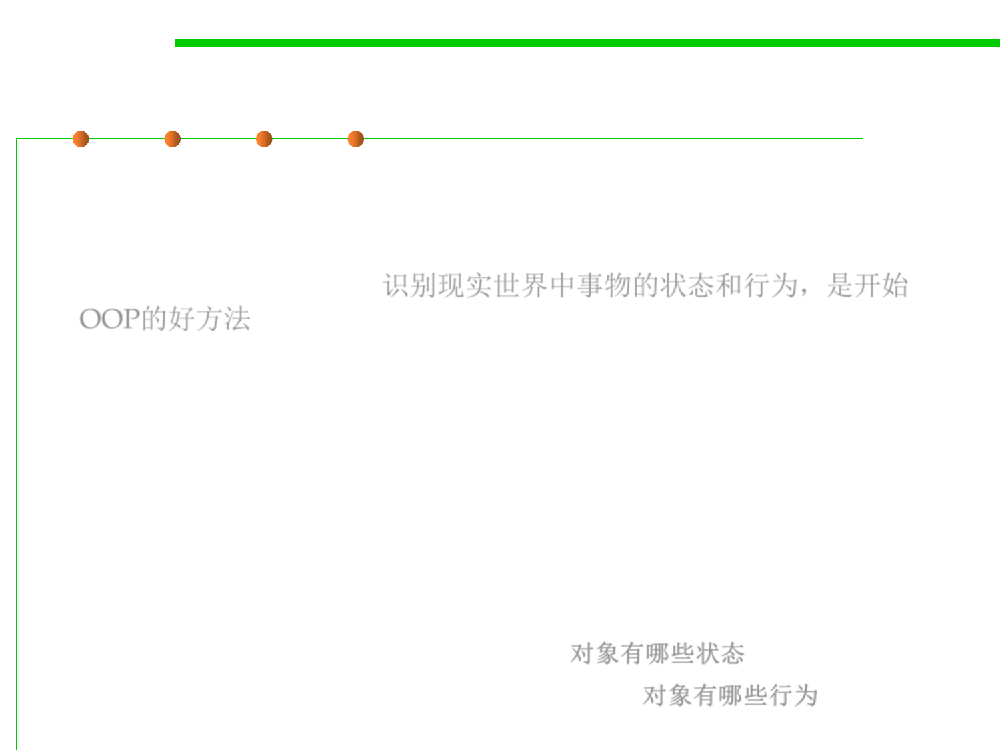

Object
3.4 Object-Oriented Programming (OOP)
▪ Real-world objects share two characteristics: they all have
state and behavior. Identifying the state and behavior for real-
world objects is a great way to begin thinking in terms of object-
oriented programming. 识别现实世界中事物的状态和行为，是开始
OOP的好方法
– Dogs have state (name, color, breed, hungry) and behavior (barking,
fetching, wagging tail).
– Bicycles also have state (current gear, current pedal cadence(踏板节奏),
current speed) and behavior (changing gear, changing pedal cadence,
applying brakes).
▪ For each object that you see, ask yourself two questions, and these
real-world observations all translate into the world of object-
oriented programming.
– What possible states can this object be in? 对象有哪些状态
– What possible behavior can this object perform? 对象有哪些行为